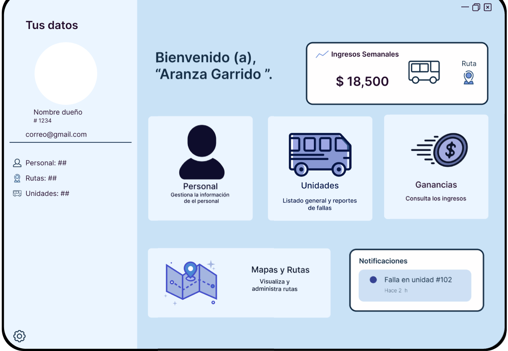

Auto-Record te ayuda a gestionar rutas de transporte público
Una solución integral para el monitoreo y gestión eficiente de las unidades, rutas y reportes, diseñada para revisores de transporte público.
Problema
Los supervisores de transporte público enfrentan dificultades para mantener un registro preciso y actualizado del estado de las unidades y rutas, lo cual lleva a dificultades operativas y problemas de servicio.

